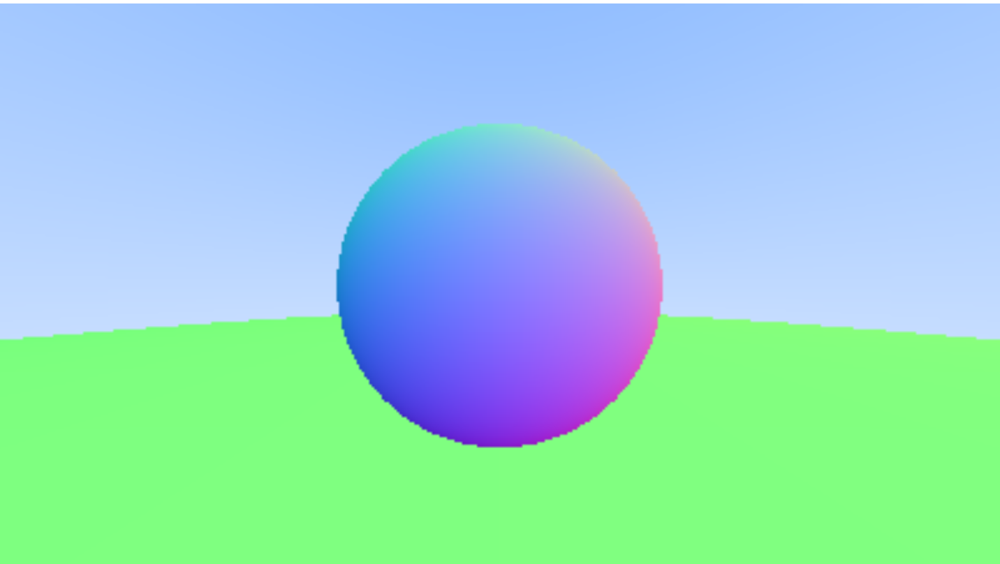
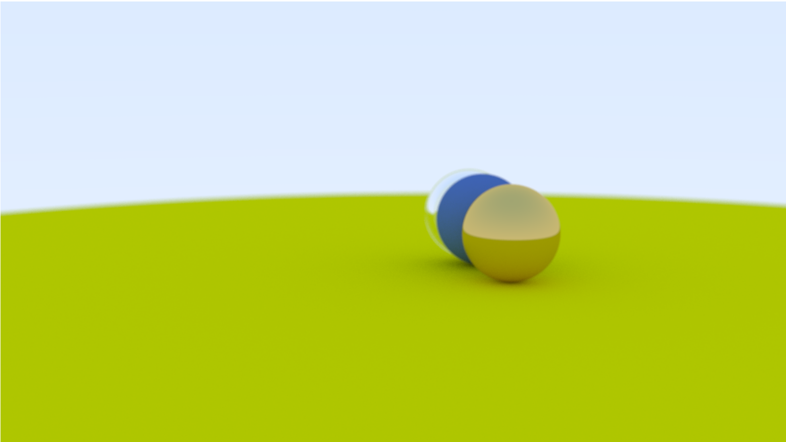
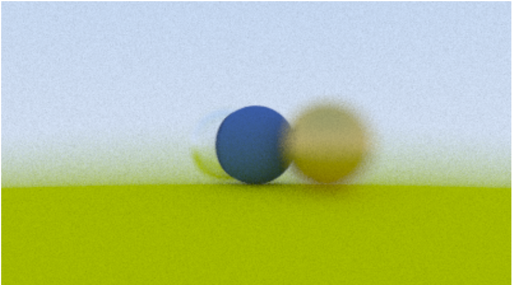
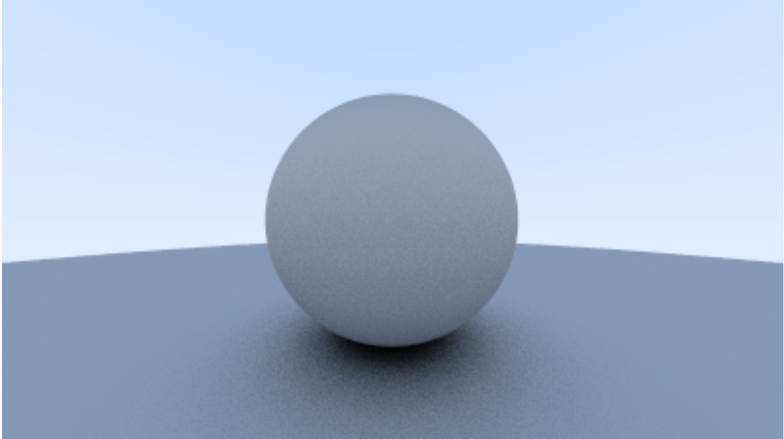

Ray traced Spheres with glass, metal and diffuse materials
Hello, I wanted to learn more about raytracing. I had taken up a Computer Science course in university before which taught ray tracing. Now I did understand the theory of raytracing and the math behind it, but I didn’t completely understand how the codebase was structured.
Luckily I came across Pete Shirley’s books on RayTracing, namely Ray Tracing in One Weekend, RayTracing the next week, and Ray Tracing the rest of your life.
This book goes through creating an image first and foremost through the method of ray tracing. The first two chapters were adding utility to the code (3 dimensional vector class, image output). The book has stuck with writing the output to std::cout and then redirecting it to a .ppm file. I didn’t find a lightweight software to open such files and opening it became a hassle. To make things easy, I stored the output in a memory buffer and then passed this buffer to a custom class FrameBuffer which saves it in a .tga format. Code is given below which I took from a youtube channel “nicebyte”. Images can also be stored in .png format using the stb_image.h, available on Github here: https://github.com/nothings/stb.
// FrameBuffer.h : for saving image to a tga image file
// I'm not writing the entire class, but you can use this function.
// m_buffer is the image buffer where the pixel colors are stored after raytracing is done
voidsave(constchar*filepath) const {
// filepath is relative to the $WorkingDir
// (directory where the vcproj file is stored)
FILE*pFile = fopen(filepath, "wb");
//_ASSERT(f);
putc(0, pFile);
putc(0, pFile);
putc(2, pFile); /* uncompressed RGB */putc(0, pFile); putc(0, pFile);
putc(0, pFile); putc(0, pFile);
putc(0, pFile);
putc(0, pFile); putc(0, pFile); /* X origin */putc(0, pFile); putc(0, pFile); /* y origin */putc((m_img_width&0x00FF), pFile);
putc((m_img_width&0xFF00) /256, pFile);
putc((m_img_height&0x00FF), pFile);
putc((m_img_height&0xFF00) /256, pFile);
putc(24, pFile); /* 24 bit bitmap */putc(0, pFile);
fwrite(m_buffer, channels, m_img_width*m_img_height, pFile);
fclose(pFile);
}
Ray Tracing involves generating a ray which originates from the camera in the direction of the pixel on the screen. This ray may or may not intersect our geometry scene. It helps to imagine that the camera is on the world origin (0,0,0) and the screen is at an unit distance away in the direction the camera is facing. The camera follows the right hand coordinates system are such that the -Z axis is the direction where our camera is facing. The screen space is generally normalized to -1, 1 in X and Y axes, but it is not followed in this walkthrough.
Now that we have a ray that shoots from the camera position in the direction of the pixel coordinate on the screen space, we follow that ray through the screen and onto our scene geometry which lies behind the screen. Here, we consider that our scene consists of only spheres. After figuring out the math that’s required for calculating the intersection between a ray and a sphere, we get two hit points on the sphere. Now, the code just returns one hitpoint which is hardcoded, but the hitpoint where the normal at the hit point makes a negative cosine with ray dir should be considered. When a hit occurs, information about the place where the hit occured is stored in a struct(or an object) and returned to the caller of the intersection. This information includes the distance of this hit point from the pixel, the normal at the point of hit, the parameter t used in the parametric representation of the ray, the material of the object that it hit, if the face it hit is a front face of not (can be determined by dot pdt too), etc. This information is defined as the developer sees fit (Now DirectX12 handles this differently but that’s a topic for another post).

A glass sphere with double glass walls
now that we have information about the point that our ray hit, we can do calculations on how to color this pixel from whose ray we intersected an object in the scene. This can be either simple by looking up the material from a resource already created earlier and which is available to the CPU memory, or it can be complicated if the object surface is special like Metal, Dielectric or a combination/permutation of both. This also gets comlicated if the object itself is a volumetric object. In these speacial cases, knowledge of geomtery comes in handy to figure out where the ray travels next. The rest of the chapters handle what types of material exists.
The above process generates a single ray from the camera to the scene. However, that seems limiting and not that helpful, since I’m only getting information of the object material itself and not how it interacts with light sources or even other objects. To go further, we generate rays that originate from our hit points and go further in different directions according to the laws of light physics on this material. These next rays will further branch out from their hit points to different directions to collect information about the next hit. It helps to understand as if smaller cameras originate from the hit points and look in another particular direction to see how the world looks from this new position and orientation. This gives rise to our raytracing function going recursive. Each time information about the hit point is receieved, the color is determined and an attenuated value is sent to the caller of the raytrace function.
For mirror and dielectrics(e.g. glass) figuring out resultant ray direction is fairly simple geometry since we know the incident ray direction and the normal at that point. We can calculate our resultant ray direction from this using the Snell’s Law. A nice approximation we can use instead of the Fresnel’s law for specular reflection is the Schlick’s approximation here.
The code digresses a bit to cover camera movement and adding an in-camera blur. A thin lens approximation is used for achieving blur.

Translating and rotating camera

In-Camera depth of field by manipulating Aperture
I have skipped over the details of the diffuse and specular materials here. This is because these topics are important topics that deserve more than a breif summary. However, I will not leave you shivering in the cold there. To make it rudimentarily simple, I summarise it thus : In a perfectly specular material, light is reflected perfectly. This is a mirror material and therefore we can generate the output ray direction easily. To generate a rough mirror/ metal look, we go for a not-so-perfect reflections. This means we sample a direction that is generated from a cone using the perfect reflection direction as the cone axis. For a diffuse material, the resultant ray direction can be from any direction from hit point. Thus we generate a random vector in a hemisphere aound the hit point and send out next ray there.

Sphere with diffuse lighting
Now each ray when it hits an object send the information of that object back to the caller of that particular ray. this leads to an infinite recursive call. Since we don’t want to crash our systems with filled out stack, we limit the recursive call to a limited number decided earlier.
At this point, we have a basic offline ray tracer which only generates image files. The program runs on a single processor and a single thread. As such, a simple to complex scene takes up ~(5 to 15)mins to generate a 500x500 image.